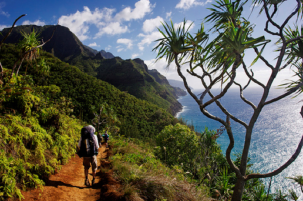
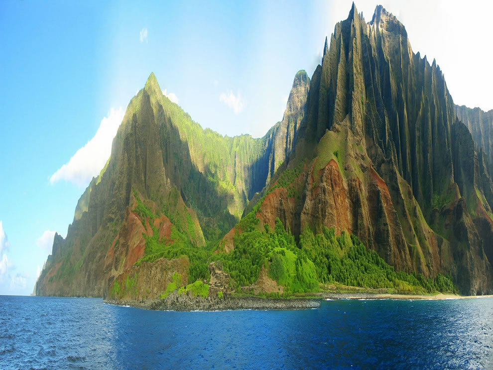

The Napali Coast, which covers 17 miles along Kauai's North Shore, is a sacred site distinguished by exceptional natural beauty. These emerald-colored cliffs with razor-sharp ridges rise above the Pacific Ocean, providing spectacular beaches and waterfalls that flow to the valley floor. The rugged environment seems much as it did centuries ago, when Hawaiian towns lived in these deep, narrow valleys, subsisting only on food they could farm and fish they could catch.
There are several ways to explore the Napali Coast, however water and air guarantee the safest access and greatest views. Boat cruises depart from Port Allen on the West Side throughout the summer, and guided kayaking expeditions bring you up close to the soaring cathedral cliffs. Whenever the weather permits, raft cruises may take you to secret sea caves and remote shores.
Polynesian navigators were the first residents on the Na Pali Coast approximately 1200 AD. Soon after, more Tahitian migrants arrived, influencing the culture of Kauai and other Hawaiian islands today. The shoreline served as a hub for trade between Hanalei, Waimea, and Ni'ihau, as well as surrounding island settlements. After Captain Cook visited Kauai in 1778, numerous Westerners began visiting the island. As more foreigners arrived, Hawaiian tribes near the Na Pali Coast, where Na Pali Coast State Park currently sits, began to die out from Western illnesses. The last known native Hawaiians to dwell along the Na Pali Coast were observed in the twentieth century.
The name NaPali literally translates as "The Cliffs," yet this has to be one of the greatest understatements of all time. The cliffs of NaPali ascend from the coast to 4,000 feet tall and appear almost vertical in places. This is one among the world's most difficult natural impediments. This stretch of the island's coastline is practically inaccessible by foot, so visitors who want to explore the cliffs or any of the little coves and pools should arrive by boat, and sightseeing tours are available from Port Allen. Many other visitors use kayaks or jet skis to obtain a close-up view of NaPali. Many people believe that the only way to properly appreciate this amazing scenery is from the air, and regular chartered helicopter flights give a bird's eye perspective of not just the cliffs but also the deep valleys, gorges, and tumbling waterfalls. The Na Pali cliffs may be seen from Ke'e Beach, although the vista is at its best when approached from the sea.
@ 2022 Silawan, John Kenneth C. | Introduction to Computing Batch 2 | Website Project | Beautiful Wonders of The World | No Copyright Infringement Intended - All rights reserve to the Righful Owners